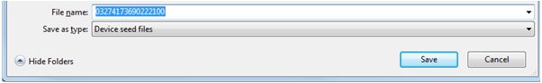
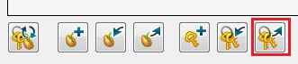

This document provides an explanation regarding key management in team development.
Contents
Administrator : An administrator here refers to the person who purchased the publisher license and who manages the Sony Entertainment Network account (SEN account hereafter) and its password.
Development member : A development member refers to a person involved in team development who does not hold a SEN account or password.
Explanation is provided using Vita as an example. Procedure is the same for an Android device.
Start the Publishing Utility on a development member's PC and select the left side's [Key Management] panel.
Switch on the power of Vita and connect to the PC using a USB cable. If DevAssistant is not started up, the Vita icon will be displayed in gray. The Device Seed cannot be created at this stage.
Start DevAssistant, the Vita icon will change to black. The Device Seed can be created when the icon is black.

Select the device in the device list and click the [Generate Device Seed] button; the creation of the Device Seed will start.
After the Device Seed creation succeeds, click on the [Export Device Seed] button.
A nickname must be entered - enter any name.

Save the Device Seed in an appropriate place.
Note: When saving, do not change the filename.

Register the Application ID of the PSM application shared with development members on PSM Studio. Click on the [+] button of the [Key Management] panel.
On the displayed dialog, select app.xml in the project to share. When successful, the Application ID will be displayed on the Application ID list.

Select [Import Device Seed].
Select the Device Seed of a development member. When successful, a dialog will be displayed.

When the import of a Device Seed completes, display will be as follows.

Next, select the Application ID on the list and the Device Seed, and click the [Create application key] button.

Click OK and enter the Sony Entertainment Network ID and password.

When the application key is successfully created, the display will be as follows.
Click on [Export Publisher Key] and save in an appropriate location.

Import the Publisher Key passed from the administrator.

Import the application key ring passed from the administrator.
When processing completes, the display will be as follows.
Open the project on PSM Studio and rebuild.
The PSM application can be executed on an actual device with the above processing.
Note: When the Publisher Key or Device Seed is updated, keys will become misaligned and an error will occur upon execution. When the Publisher Key or device is updated, delete the key ring and recreate keys.